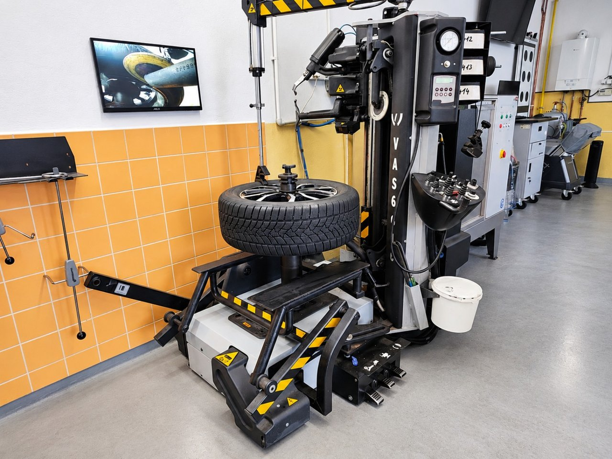
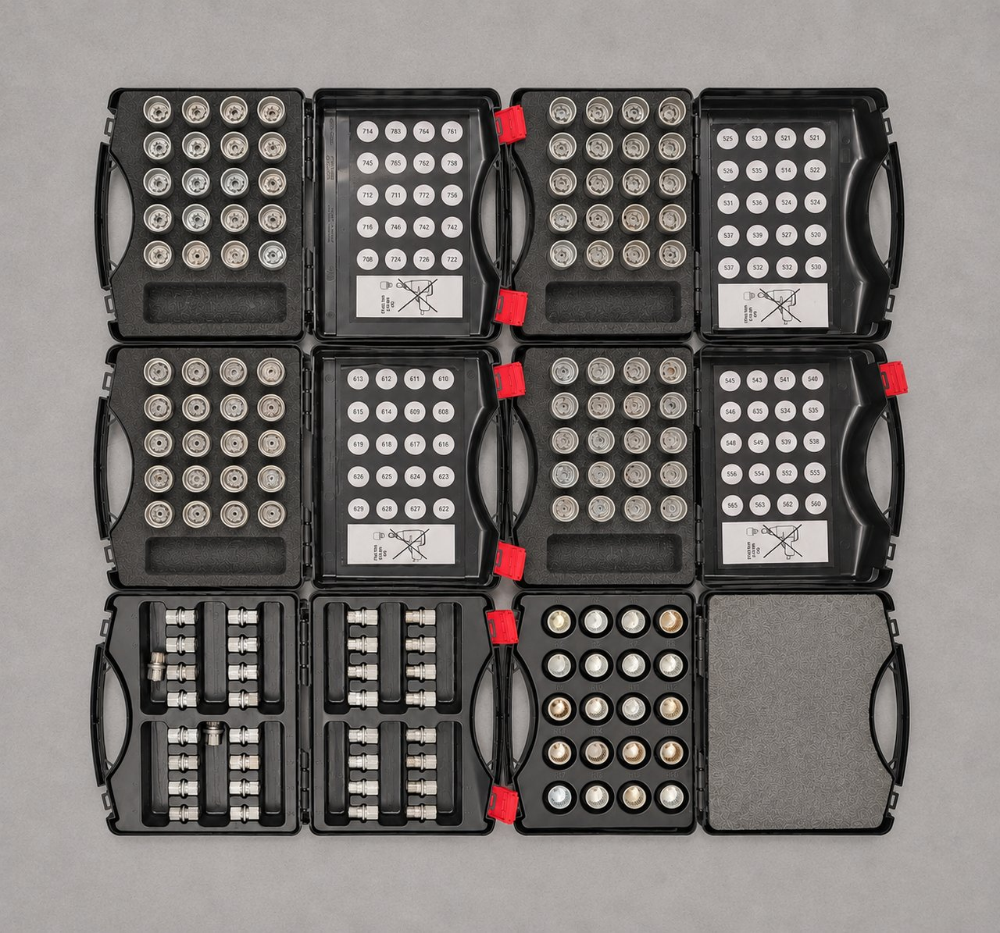
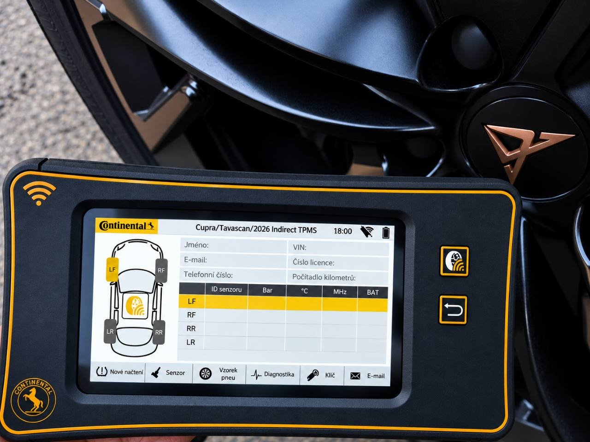

Reifenwechsel und Reifenverkauf für Ihr Fahrzeug

Reifenmontage-Arbeitsplatz bei J&S SERVIS.
J&S servis in Statenice bietet technologisch fortschrittlichen Reifenservice mit schonender Montage, präzisem Auswuchten, Diagnose von Reifen- und Felgenunregelmäßigkeiten und Prüfung der TPMS-Systeme. Wir nutzen spezielle Ausrüstung für Pkw, Sportwagen und leistungsstarke Fahrzeuge.
- Robotergestützte Reifenmontage VAS 6616
- Diagnose-Auswuchten mit Beissbarth MT ZERO 8
- TPMS-Diagnose mit Continental und Radwäsche
Robotergestützte Reifenmontage – VAS 6616
Die professionelle automatische Reifenmontiermaschine VAS 6616 (monty quadriga) nutzt die Laserabtastung der Felgenkontur und automatisch gesteuerte Montagewerkzeuge. Sie ermöglicht eine schonende Montage und Demontage und minimiert das Risiko von Schäden an Felgen und Reifenwülsten.
Die Technik eignet sich auch für anspruchsvolle UHP-Niederquerschnittsreifen und Runflat-Reifen.
Diagnose-Auswuchten – Beissbarth MT ZERO 8
Die moderne Diagnose-Auswuchtmaschine ermöglicht präzises Auswuchten und die Prüfung geometrischer Unregelmäßigkeiten von Reifen und Felgen im Rahmen ihrer verfügbaren Funktionen.
Sie hilft bei der Ursachenfindung von Vibrationen, die trotz gewöhnlichen Auswuchtens bestehen bleiben können.
Zum fachgerechten Verfahren kann auch die Optimierung der relativen Position von Reifen und Felge gehören, um den Gesamtrundlauf des Rades zu verbessern.
Adaptersätze für Felgenschlösser der VW Group

TPMS / RKA / RDK-Diagnose – Continental
Bei J&S SERVIS diagnostizieren wir Reifendruckkontrollsysteme von Volkswagen Group Fahrzeugen. Dafür nutzen wir professionelle Continental-Ausrüstung und ODIS.
Direkte RDK-Systeme nutzen elektronische Sensoren in den einzelnen Rädern. Wir prüfen deren Funktion, Kommunikation und den Systemzustand. Je nach Fahrzeug programmieren wir auch kompatible Ersatzsensoren und ordnen sie dem Fahrzeug zu.
Indirekte RKA- und RKA+-Systeme werten Änderungen im Radverhalten anhand von ABS-/ESC-Daten aus. Wir diagnostizieren Fehler und führen die erforderliche Initialisierung nach Herstellervorgaben durch.
Beim Reifen- oder Komplettradwechsel prüfen wir bei Bedarf die Systemfunktion und bearbeiten etwaige Fehlermeldungen. Der Umfang richtet sich stets nach Fahrzeug und Ausstattung.

Professionelle maschinelle Radwäsche – Wulkan
Die spezielle Wulkan-Radwaschmaschine reinigt Felgen und Reifen gründlich vor dem Diagnose-Auswuchten.
Das Entfernen von Schmutz unterstützt zuverlässige Messungen und ein hochwertiges Auswuchtergebnis.
Service für Sportwagen und leistungsstarke Fahrzeuge
Unsere technische Ausrüstung ermöglicht auch fachgerechtes und schonendes Arbeiten an anspruchsvollen Rädern von Sport- und Hochleistungsfahrzeugen, etwa Porsche, Audi RS und anderen Premiumfahrzeugen, innerhalb der Geräteparameter.
Reifenservice bieten wir für Volkswagen, Audi, Škoda, SEAT, CUPRA, Porsche und weitere Marken an.
Kompletter Reifenservice zu transparenten Preisen
Der Preis des üblichen kompletten Reifenwechsels für vier Räder beinhaltet Ab- und Anbau am Fahrzeug, Reifenmontage, Standardauswuchten einschließlich verbrauchter Gewichte und maschinelle Radwäsche.
Weiterführende Rundlaufdiagnose, Radoptimierung, TPMS-Sensorprogrammierung und weitere Zusatzleistungen werden nach Arbeitsumfang gesondert berechnet.
Reifenverkauf für Pkw und Nutzfahrzeuge
Nach telefonischer Bestellung können wir je nach Bedarf Reifen verschiedener Typen und Marken beschaffen. Anschließend montieren wir sie und wuchten die Räder in unserer Werkstatt aus.
Vor der Terminvereinbarung
Nennen Sie bei der Terminvereinbarung die Radgröße, ob Sie Kompletträder oder auf Felgen zu montierende Reifen mitbringen, und gegebenenfalls eine TPMS-Meldung. Für einen reinen Komplettradwechsel lassen Sie den passenden Umfang und Preis bestätigen; der Reifenmontagepreis umfasst andere Arbeiten.